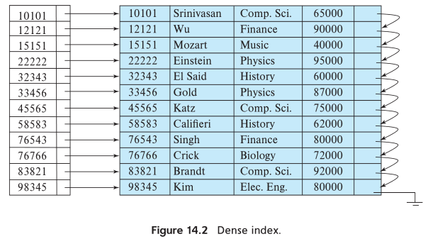
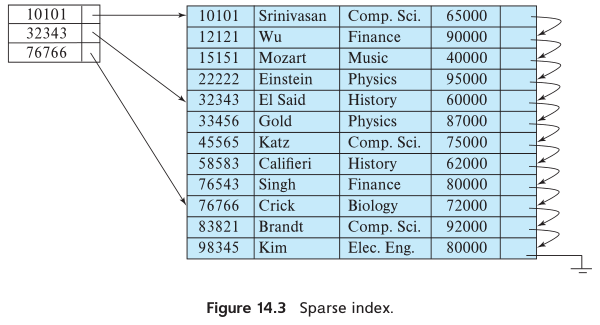
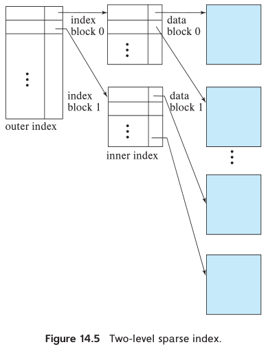
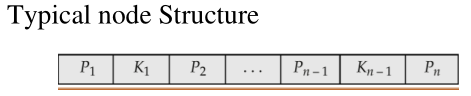
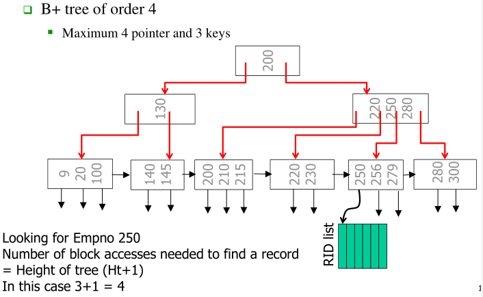

Database¶
SQL (relationship model)¶
PL/SQL block¶
DECLARE
--Declares internal program objects, such as variables.
--Marks the beginning of the program logic.
BEGIN
--This is the actual PL/SQL and SQL statements.
FOR I IN 1..1000 Loop
INSERT INTO employee(ssn, name)
VALUES(900000000 + I, 'John Doe');
END LOOP;
COMMIT;
EXCEPTION
--Marks the beginning of exception logic.
WHEN OTHERS THEN
ROLLBACK;
END;
--Marks the end of the program logic.
Triggers¶
Row-level Triggers
CREATE OR REPLACE TRIGGER TriggerName
BEFORE | AFTER
INSERT OR DELETE OR UPDATE OF Column1, ColumnN
ON TableName
FOR EACH ROW
REFERENCING OLD AS OldName
NEW AS NewName
WHEN (condition expression)
DECLARE
BEGIN
EXCEPTION
END;
indexing¶
理解：index的作用像书本的目录一样，因为数据是有序的，所以可以由目录去索引
但实际上index分为顺序索引，散列索引（根据hash function）两种。在顺序索引中，分为dense index，sparse index两种。
 
single level index vs Multi-Level Index

SQL Syntax
Create Index IndexName on T(A)
Create Index IndexName on T(A1,A2,…,An)
Create Unique Index IndexName on T(A)
Drop Index IndexName
B+ tree indexing¶
B+ tree indexing 是为了解决当数据越来越大时，索引查找性能下降的问题，虽然这个问题可以通过从组索引来解决，但是我们并不希望频繁重新重组索引。所以使用B+ tree。
B+ tree indexing 怎么做到的：B+ tree 采用平衡树（balance tree）结构，也就是说root（树根）到 each leaf（树叶）的路径是相等的。假设每个node最多可以有n个children，那么每个node存储了n个pointer和（n-1）个search-key values
 
basic search method¶
Linear search (sequential scan)
Average search time = \( \frac{b}{2} \)
Binary search Average search time =\( \log_2(b) \)
https://www.cs.usfca.edu/~galles/visualization/Algorithms.html
query optimization¶
Transaction Management¶
Transaction properties:
A(Atomicity): Transaction是不可分割的单位，要么全部执行，要么都不执行。 C(Consistency): Transaction必须将数据库从一个一致状态转换到另一种一致状态。 I(Isolation): Transaction之间的执行是互相独立的，也就是说未完成事物导致的中间结果对其他事物来说是不可见的。 D(Durability):结果将被永久记录在数据库中。
Exercise
Consider a relation R(A) containing {(4),(8)} and two transactions:
T1: Update R set A = A+2;
T2: Update R set A = 2*A.
Suppose both transactions are submitted under the isolation and atomicity properties. Provide all possible final states of R by considering all possible serializable schedules.